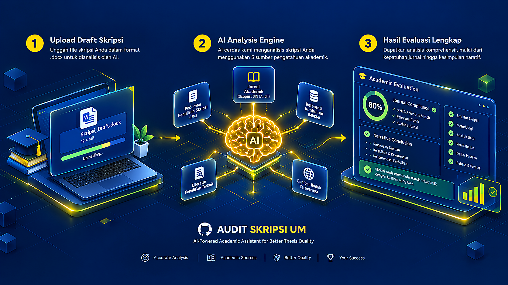

Disusun berdasarkan Pedoman Penulisan Karya Ilmiah Universitas Negeri Malang (Edisi Keenam, 2017). Dioptimalkan khusus untuk ruang kerja Claude.ai Projects agar mahasiswa dapat memeriksa keselarasan logika penelitian, rasio rujukan primer, dan latihan tanya-jawab sidang secara mandiri.
Rujukan Artikel Jurnal
Tahun Terbit Rujukan
Kata Bagian Inti S1
Bentuk Baku Simpulan
Kelayakan Naskah: Siap Ujian dengan Revisi Minor
Ikuti simulasi visual di bawah ini untuk menyiapkan ruang kerja Claude.ai Projects Anda dalam lima langkah mudah tanpa instalasi teknis apa pun.

Ringkasan alur audit mandiri: mulai dari penyiapan Project di Claude.ai, pengunggahan modul Knowledge standar UM 2017, audit keselarasan benang merah bab demi bab, hingga simulasi ujian sidang 4 ronde bersama Dosen Killer.
Unduh berkas acuan resmi dalam format Markdown bersih untuk diunggah ke Project Knowledge Claude Anda sesuai standar UM 2017.
Salin teks instruksi ini dan tempelkan pada menu Custom Instructions di Project Claude.ai Anda untuk mengaktifkan seluruh persona dan alur telaah UM 2017.
Buku Pedoman Penulisan Karya Ilmiah UM Edisi Keenam lengkap (147 KB) yang memuat ketentuan umum skripsi, gaya selingkung, dan tata cara sitasi APA.
Unduh Berkas PedomanUnggah ke Knowledge agar Claude menguasai bobot matematis Bab 1 s.d. Bab 5, kriteria skor benang merah, metode, rujukan, hingga etika plagiarisme.
Unduh Rubrik AuditUnggah ke Knowledge agar Claude otomatis mengidentifikasi 100+ kata tidak baku, mengoreksi konjungsi antarklausa di awal kalimat, dan format angka desimal.
Unduh Daftar Kata BakuUnggah ke Knowledge agar sesi simulasi sidang (/sidang) di Claude dipandu kartu penilaian resmi dewan penguji UM lengkap dengan rentang nilai huruf mutu A s.d. E.
Unduh Skala PenilaianUnggah ke Knowledge saat Anda ingin Claude memandu rekonstruksi naskah skripsi menjadi naskah publikasi jurnal kelulusan format IMRAD tanpa nomor bab.
Unduh Pedoman ArtikelBeberapa aspek krusial yang paling sering menjadi catatan perbaikan dosen pembimbing dan penguji dalam ujian skripsi.
Ketidaksesuaian antara rumusan masalah di Bab I, instrumen di Bab III, dan hasil analisis di Bab IV. Simpulan sering kali tidak menjawab langsung pertanyaan penelitian.
Kajian pustaka yang didominasi buku teks pengantar lama. Pedoman UM mensyaratkan minimal 80% bersumber dari artikel jurnal dan terbit dalam 10 tahun terakhir.
Bab pembahasan yang hanya mengulang angka persentase dari tabel hasil, tanpa menguraikan alasan teoretis mengapa hasil tersebut diperoleh serta perbandingannya dengan studi lain.
Masih digunakannya kata ganti orang pertama (peneliti, saya), konjungsi antarklausa di awal kalimat (sehingga, sedangkan), serta format desimal yang menggunakan titik alih-alih koma.
Pilihlah salah satu bab di bawah ini untuk melihat contoh teks yang kurang tepat dan bagaimana cara menyusun kalimat ilmiah yang sesuai dengan standar akademik.
Tersedia dua mode penelaahan yang dapat disesuaikan dengan tahapan persiapan Anda di Claude.ai.
Fokus: Logika Metodologi & Pertahanan Argumen
Pendekatan yang menempatkan diri sebagai penguji sidang yang cermat. Model ini akan mengajukan pertanyaan-pertanyaan mendasar seputar validitas instrumen, representasi sampel, dan alasan pemilihan desain penelitian untuk melatih kesiapan mental Anda.
Fokus: Perbaikan Kalimat & Kaidah Bahasa Baku
Pendekatan yang berorientasi pada bimbingan redaksional. Model ini mengidentifikasi kelemahan struktur alinea, mendeteksi kata-kata non-baku, dan memberikan rekomendasi formulasi kalimat baru yang siap Anda telaah kembali.
Seluruh proses penelaahan dilakukan langsung di dalam ruang kerja Claude.ai pribadi Anda. Tidak ada data naskah, abstrak, atau identitas mahasiswa yang dikirim atau disimpan di peladen publik halaman ini.
Pedoman UM 2017 mengadopsi standar penulisan APA Style dan kaidah bahasa baku Indonesia (EYD dan KBBI). Sebagian besar prinsip—seperti kebaruan rujukan 10 tahun terakhir, minimal 80% jurnal, keselarasan rumusan masalah, dan ragam bahasa formal—berlaku universal di perguruan tinggi Indonesia.
Sangat disarankan menelaah naskah bab demi bab (misalnya Bab I terlebih dahulu, kemudian Bab II, dan seterusnya). Hal ini memungkinkan Claude memberikan telaah yang lebih rinci dan mendalam pada setiap bagian.
Bisa. Instruksi telah dilengkapi mekanisme deteksi tahapan. Jika naskah yang diajukan terdiri dari Bab I hingga Bab III, evaluasi akan difokuskan pada ketajaman latar belakang, relevansi pustaka, dan kelayakan instrumen metode.
Inisiatif ini merupakan sarana bantu belajar mandiri sumber terbuka (open source) dan tidak berafiliasi institusional resmi dengan pimpinan Universitas Negeri Malang. Seluruh hasil telaah dan simulasi bersifat sebagai sarana refleksi pribadi serta tidak menggantikan kewenangan, arahan, atau keputusan resmi dari Dosen Pembimbing dan Dewan Penguji yang berwenang. Mahasiswa bertanggung jawab penuh atas keaslian data dan kepatuhan etika karya ilmiah masing-masing.